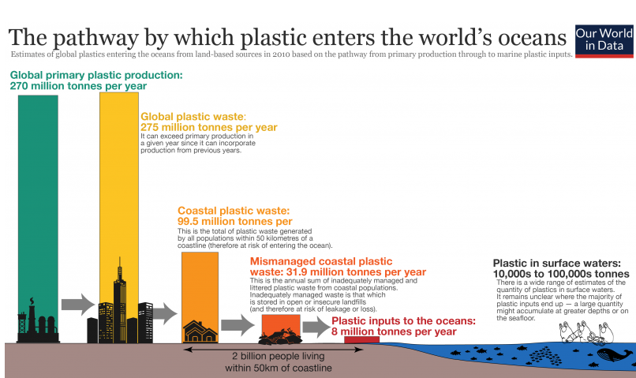

How much plastic enters Ocean.
To understand the magnitude of input of plastics to the natural environment and the world’s oceans, we must understand various elements of the plastic production, distribution and waste management chain. This is crucial, not only in understanding the scale of the problem but in implementing the most effective interventions for reduction. The data and visualizations which follow in this entry provide this overview step-by-step. This overview is summarized in the figure.